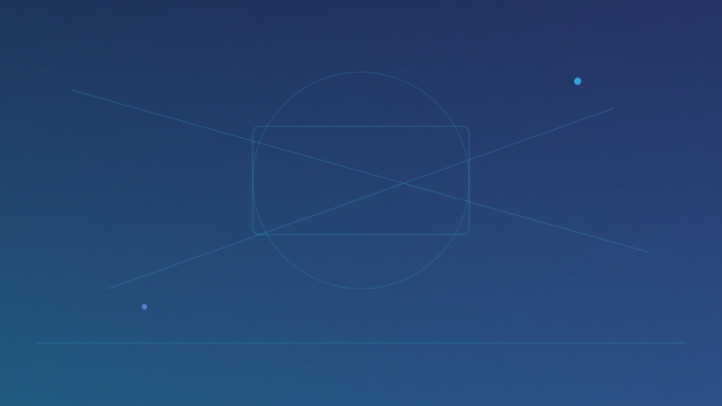
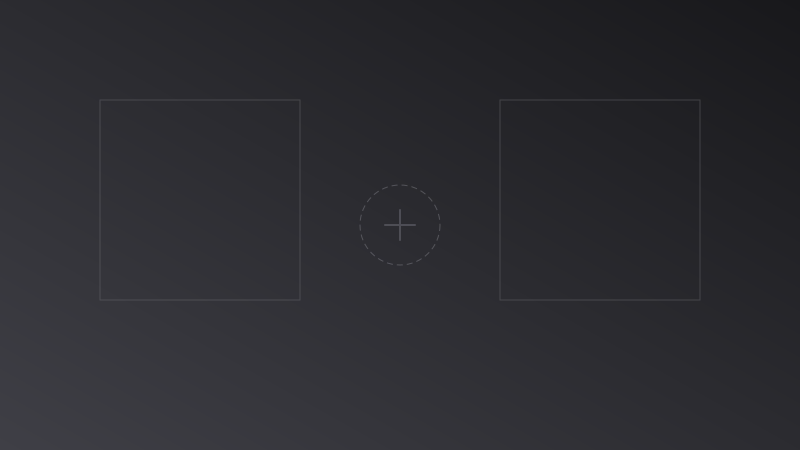

pro0
面向旅游场景的智能助手项目，支持从用户需求出发生成可执行的行程建议，并提供持续对话式调整体验。项目详情页包含完整介绍与演示视频。
云剪辑 · 端云一致 · LLM 成片
音视频 / 渲染引擎方向 · 把「要出片」做到「可规模化上线」
我主攻端到端视频生产，能把业务侧的脚本与素材，一路收敛成可渲染时间线，再经云剪辑落成可投放成片。
四块能力我最常扛：
Linux 云剪辑与分布式渲染——多轨合成、转码、任务调度与 GPU 流水线，支撑大批量稳定出片；
端云一致的实时预览——同一套 C++ 渲染核心落在 macOS / Web（WASM）并与云端对齐，减少「剪完才发现不对」的返工；
iOS / macOS 音视频编辑与渲染——端侧时间线编辑、特效与字幕包装、预览与导出链路打通，让移动端与桌面端在编辑语义和成片质量上尽量一致；
LLM 与自动化编排——文案与分镜、素材与装饰匹配、Timeline 组装与 TTS 对齐，把智能化接到工程闭环里。
若你正在找能打通「创意 → 时间线 → 云端成片」的人，往下翻项目与技术栈，底部是工作经历，我们可以很快对齐是否合拍。
点击卡片进入项目介绍与演示；代码仓库入口在对应详情页文末。

面向旅游场景的智能助手项目，支持从用户需求出发生成可执行的行程建议，并提供持续对话式调整体验。项目详情页包含完整介绍与演示视频。
桌面非编与浏览器监看、Web 侧预览与导出、与云端渲染任务同一条语义链路的实践整理；新增旅游 Agent 方向探索：通过对话式指令驱动旅行素材编排与镜头组织（演示素材见 resource/trip.mp4），并与现有多端预览链路联动验证。
Linux 上多轨道非编与合成、控制台与 OpenAPI 一体的云剪辑「制作中心」；收录系统架构与渲染链路的 PDF 说明，以及电商、本地生活等多行业营销成片 demo。
用 React / Remotion 把组件写成时间线：适合模板化营销片、数据驱动片头与 CI 里批量出片；与 Node 渲染进程、合成参数化一套仓库管线对齐。

把故事线或口播脚本自动展开为可渲染时间线：串联文案分镜、素材候选、字幕与装饰轨，输出给云剪辑或端侧执行；介绍页含 Ai_Clip 按模块落地的完整技术方案（素材转码 → LLM → 召回与重排 → TTS → Timeline → 渲染）。当前状态：TODO（持续完善中）。
协议驱动多轨视频渲染：WebGL 合成、WebCodecs 解码编码、轨道可视化与 Inspector 参数编辑，支持离线导出 MP4（当前无声），用于在 Web 侧复刻端侧多轨渲染流程。
基于 Skia 的模板化出图：适用商品静态图、海报、落地页与投放配图等凡需栅格图交付的场景；协议驱动版式与渲染，多格式导出，便于与中台数据批量对接。
iOS 端专业剪辑与包装：画幅与背景、AI 人像分割与换背景、滤镜与粒子特效、美颜美体、入场出场动画与裁剪旋转，面向竖屏营销与口播成片在手机上闭环完成。
Swift、Objective-C（iOS/macOS 主力）；C++（渲染与 FFmpeg 侧核心、WASM 编译）；Python（预处理、算法脚本、自动化）；JavaScript / TypeScript（Electron、Remotion、工具链）；Shell、CMake 等工程配套。
UIKit、SnapKit；Metal 多轨合图与性能调优；Electron 多进程架构；与设计协作（如 Figma → 代码）下的界面落地经验。
FFmpeg（解码、转码、多轨合成、封装）；x264/x265；软硬编解码与 NVDEC / NVENC；时间线协议、流式加载（如 AVIO 分块缓存）；采集、剪辑、导出全链路。
OpenGL、SwiftShader CPU 渲染路径；CUDA–OpenGL 互操作与显存侧优化；Metal；Web 侧 WASM + OpenGL ES；MetalPetal、Skia 等图像/视频特效与图文场景。
iOS、macOS、Linux 服务器；跨平台同构渲染核心的维护与裁剪；云端 GPU 作业与本地预览一致性保障。
WebRTC（自定义采集、推流监看）；ZeroMQ（Electron IPC）；MQTT（如 CocoaMQTT 直播消息）；RocketMQ 任务调度与 Pipeline 编排。
LLM Prompt、分镜与语义标签；Pydub、MoviePy、OpenCV、librosa 等预处理；ASR / TTS 对齐；规则引擎与素材排序；LangChain、向量检索 Faiss / Chroma、Function Call 等按需接入。
自动化视频质量回归、核心逻辑高覆盖率测试；Git 协作；复杂需求下的 POC、协议设计与文档沉淀；ToB 交付节奏与多业务线优先级管理。
RTMP/RTP、H.264/AAC 封包与解包；ZLMediaKit 搭建与基础链路验证。
按时间倒序，以下为结构化摘要。
Poppo Live 出海直播：短视频生产、拍摄剪辑、一键成片；模板视频（服务端渲染 + 端侧接入）、MQTT 消息、Metal 多轨合图等。
智能视频剪辑 SaaS：从 0 到 1 分布式音视频云服务、云剪辑渲染、端侧 Timeline 预览与 WASM、AI 自动成片等子系统。
移动短视频 SDK：采集、编辑、播放、OpenGL/Metal 渲染与导出优化。
比优心理、轻松妈妈、海蜜全球购等产品线的 iOS 业务开发与维护。